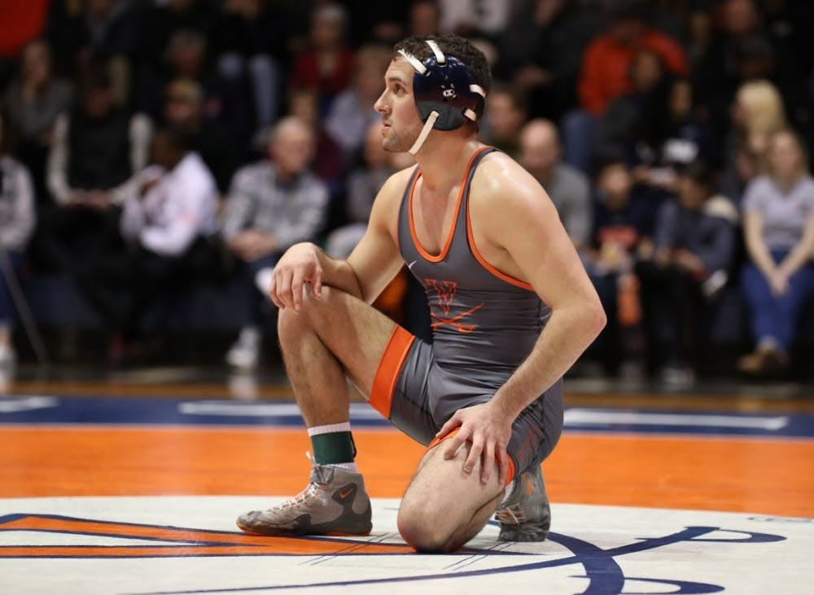

By Chad Whych | 01/27/2020

After two dominant home meets in Memorial Gymnasium against Tennessee-Chattanooga and Virginia Military Institute where Virginia triumphed by a total margin of 73-12, the Cavaliers (7-3, 0-1 ACC) traveled to Raleigh, N.C. to open ACC play against No. 5 NC State.
Despite Virginia’s momentum, the Cavaliers knew that they would have their hands full. NC State (11-0, 1-0 ACC) is one of the strongest programs in the country. The Wolfpack came into the dual with 11 straight victories, two of which were against ranked opponents. Additionally, six of the 10 Wolfpack starters are top-25 ranked wrestlers — juniors Tariq Wilson, Hayden Hidlay, Thomas Bullard, Daniel Bullard, Nick Reenan and redshirt freshman Trent Hidlay.
These impressive credentials did not stop team leader and senior Jack Mueller — No. 2 in the country at 125 lbs — from starting off the dual in the Cavaliers’ favor. Meuller soundly defeated his opponent, freshman Jakob Camacho, 5-2.
Following Meuller’s victory, the Cavaliers lost eight of the next nine matches. The sole win came from junior Jay Aiello — ranked No. 9 at 197 lbs — who received an injury default victory against his ranked counterpart, No. 16 Reenan. Aiello shot in on Reenan, the force of which left Reenan unable to continue.
The other eight Virginia starters — including junior Louie Hayes, sophomore Brian Courtney, sophomore Denton Spencer, freshman Justin McCoy, sophomore Krystian Kinsey, freshman Victor Marcelli, junior Michael Battista and sophomore Quinn Miller — all fell in their individual matches.
Ultimately, NC State prevailed over the Cavaliers by a margin of 28-9, which is the Wolfpack’s sixth straight win against Virginia. The victory pushes NC State’s series lead to 11 wins and eight losses.
The Cavaliers will need to keep their heads up and hit the mat hard at practice this week, as they host in-state rival No. 4 Virginia Tech Friday. The Hokies (8-1, 0-1 ACC) may pose an even bigger challenge than NC State.
The tough loss will only continue to light a fire for Virginia — anything can happen on a given match day, and the Cavaliers know that an upset victory against their closest rivals could push them back into the NCAA Top 25.
“Tonight was a rough night,” Coach Steve Garland said. “We got out-wrestled. Credit to the coaching staff and athletes on that NC State team, they did a great job. Our guys need to make a decision now and decide how they want to respond because tonight was unacceptable. I believe our team will make the right decision heading to the next dual with Virginia Tech.”